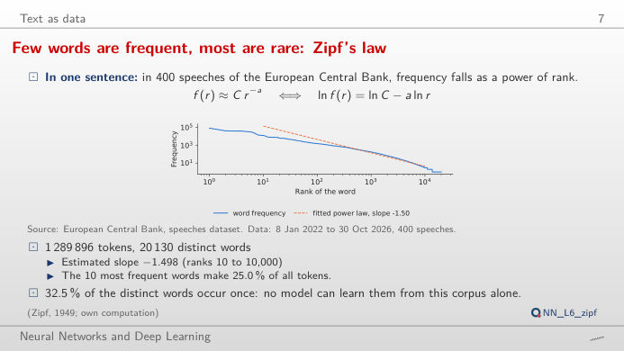
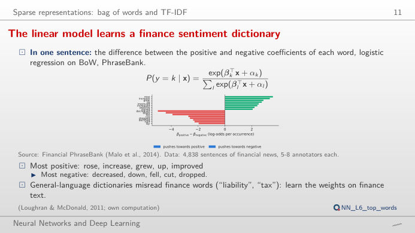
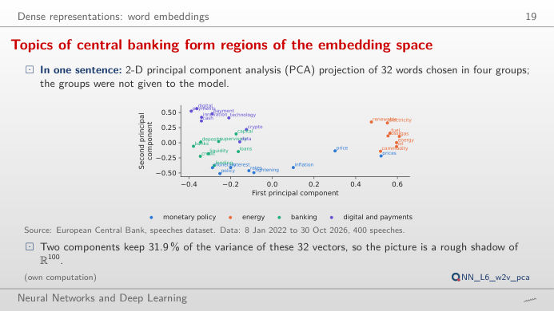
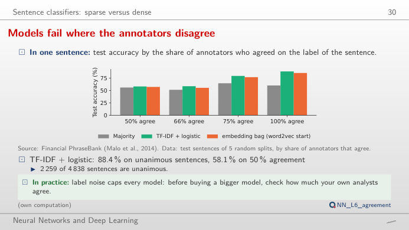
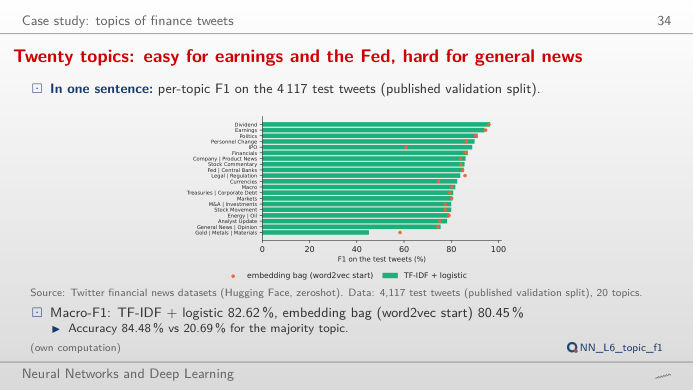

Natural language processing (NLP) turns text into numbers. The slide of the lecture is on the left, the same idea on the right, recomputed in your browser from the course data and from the models trained in the lecture when you move a control. Under each figure: a readout, a question for the room and the Quantlet with the code of the chart.
Text as data · Sparse representations: bag of words · Dense representations: word embeddings · Sentence classifiers · Case study: topics of finance tweets
Text as data
Few words are frequent, most are rare: Zipf's law

Answer
The speeches have 20,130 distinct words; a minimum count of 5 keeps 8,539 of them (42%) but still covers 98.4% of the 1,289,896 tokens. Rare words are many but each is rare, so the lost text is only 1.6%. Raise the threshold to 100: 1,545 words still cover 86.1% of the text. This is Zipf's law at work (slope −1.498 on the log–log scale): a small vocabulary covers most of the text, and the long tail is where out-of-vocabulary (OOV) words come from.
Sparse representations: bag of words
The linear model learns a finance sentiment dictionary

Answer
The model loses the word "down", which the scikit-learn stop-word list removes (together with "up", "not", "below" and "above"), and "down" is the strongest negative word of the sentence (β_positive − β_negative = −4.41). Without it the sentence is predicted neutral (41.0%, against 29.7% negative). The same happens to "Operating profit was EUR 139.7 mn, up 23% …", which falls from 83.2% positive to a negative prediction (44.8%). Generic preprocessing removes exactly the words that carry financial sentiment; type your own sentence to test other words.
Dense representations: word embeddings
Nearest neighbours in our word2vec and GloVe spaces

Answer
Both models put "rates" and "rate" first (cosine 0.83 and 0.80 in word2vec, 0.91 and 0.83 in GloVe): in central-bank speeches "interest" almost always means the interest rate. A static embedding has one vector per word, built from all its contexts, so the rarer sense disappears. Words shared by the two top lists are coloured: for "inflation" only 2 of the top 5 are common (headline, underlying); the lecture reports 1.88 shared words on average over its eight probe words.
A map of the embedding space
Answer
Yes: monetary-policy, energy, banking and payment words occupy different regions, although the map keeps only about 32% of the variance of the 32 vectors (31.8% for word2vec and 31.5% for GloVe as computed here from vectors rounded to four decimals; the lecture reports 31.9%). Keep only monetary policy and energy: the first two components now keep 45.9% (word2vec), because the map has fewer directions to show. A 2-D map is a picture, not a measure of similarity; use the cosine of the full vectors for that.
Sentence classifiers
Models fail where the annotators disagree

Answer
No. On the sentences on which all annotators agreed it is right 88.4% of the time, on those with only 50% agreement 58.1% of the time, hardly better than always answering "neutral" (56.0%). The confusion matrix shows where the errors go: positive and negative sentences are mostly pushed to neutral (263 positive and 107 negative sentences over the five test sets). The other models, including the embedding bag, have the same profile: label noise caps the accuracy, so check the agreement of your own annotators before buying a bigger model.
Case study: topics of finance tweets
Twenty topics: easy for earnings and the Fed, hard for general news

Answer
It has only 13 test tweets, and its words overlap with macroeconomic and market news: 7 of the 13 are classified correctly, 2 go to "Macro". With so few examples one error moves the F1 by several points; the embedding bag reaches 58.3% on the same topic while being worse on average (macro-F1 80.45% against 82.62%). Choose "Dividend" to see the easiest topic (F1 96.4%): its vocabulary is specific.
Data: speeches of the European Central Bank (ECB), 8 January 2022 to 30 October 2026, 400 speeches; Financial PhraseBank (Malo et al., 2014), 4,838 sentences of financial news, 5–8 annotators each; Twitter financial news, sentiment and topic (Hugging Face, zeroshot). The word vectors (word2vec, GloVe) and the classifiers were trained by lectures/L6/analysis_L6.py; the bag-of-words logistic regression of the second block is the model of the lecture (PhraseBank split 1), refitted here with the same settings.